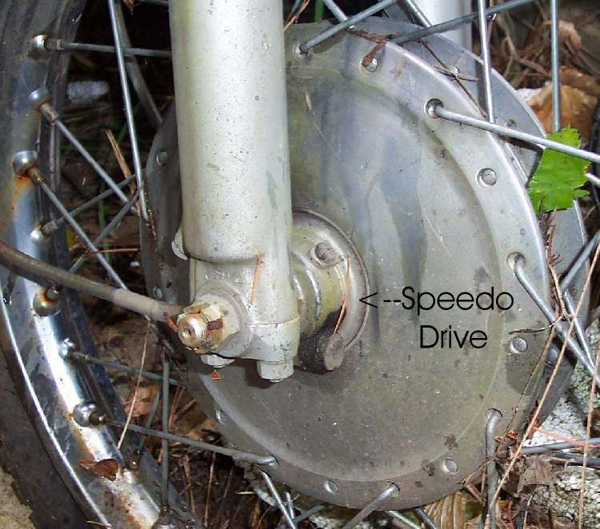

On bikes with a cable speedometer, a small gearbox turns with the front wheel and drives the speedometer cable. It is a separate part from the cable and from the wheel, so it can be removed, checked and replaced alone.
What it does
A gear inside the drive turns with the hub. The drive passes that turning to the cable, and the cable turns the speedometer. The drive has a small ear or tab that stops its housing from spinning. If the drive sits on the outside of the hub, the tab rests against the fork leg. If it sits inside the brake plate, tabs fit into the hub. Most disc brake bikes use the outside type. Drum brake bikes often have it inside, but not all.
Signs it is worn or failing
- Speedometer needle jumps, sticks or stays at zero: Speedometer cable is noisy or broken.
- Clicking or whirring from the front hub.
- Drive teeth worn or dry, or the tab broken.
When to replace it
Grease it first. Replace the unit if the gear is stripped, the housing is cracked or the tab is broken. Replace the cable only if it is the part that is damaged.
What to match when buying
- The side it sits on (outside or inside the hub).
- Hub size and drive type for your wheel, and the cable end fitting.
- Check the number of drive ears and gear teeth against the old unit.
Fitting notes
- Look at how it sits before removing the wheel and refit it in the same position.
- When refitting, tighten the axle slowly by hand. The drive binds if its tab is not in place, and a power tool can break it.
- Cable work: Replace the speedometer cable. Wheel job: Remove and refit the front wheel.